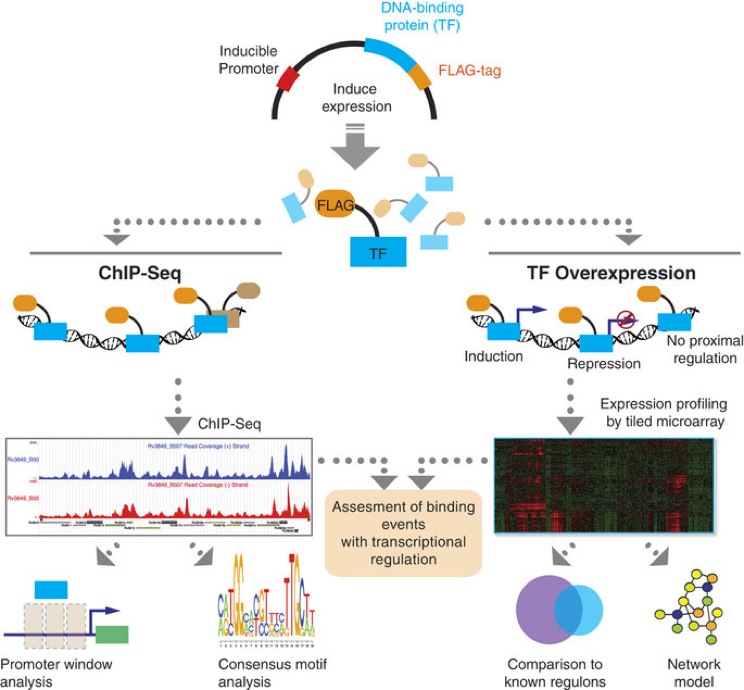

Omics4TB ChIP-Seq Experiments¶
Mycobacterium tuberculosis (MTB) is a pathogenic bacterium responsible for 12 million active cases of tuberculosis (TB) worldwide. The complexity and critical regulatory components of MTB pathogenicity are still poorly understood despite extensive research efforts. In this study, we constructed the first systems-scale map of transcription factor (TF) binding sites and their regulatory target proteins in MTB. We constructed FLAG-tagged overexpression constructs for 206 TFs in MTB, used ChIP-seq to identify genome-wide binding events and surveyed global transcriptomic changes for each overexpressed TF. Here we present data for the most comprehensive map of MTB gene regulation to date. We also define elaborate quality control measures, extensive filtering steps, and the gene-level overlap between ChIP-seq and microarray datasets. Further, we describe the use of TF overexpression datasets to validate a global gene regulatory network model of MTB and describe an online source to explore the datasets.

Figure: ChIP-Seq and TFOE Analysis Workflow.
All putative DNA-binding proteins in MTB genome were cloned into expression vector with FLAG-tag under the control of inducible promoter. After induction of expression, either chromatin immunoprecipitation followed by sequencing or transcriptional profiling by using high-density tiling arrays was performed for each TF. For ChIP-seq experiments, confident binding events across genome were identified after analysis and filtering of read pileups as described in Methods section. These binding events were further investigated with respect to transcription start sites and compared to expression consequences in TFOE dataset. Consensus DNA binding motifs were also identified. For TFOE experiments, differentially expressed genes were identified by microarray analysis. Differential expression signatures were used to build a transcriptional network model. Moreover, TFOE-derived regulatory influences were compared to 12 existing regulons as a validation.
(_Source: Turkarslan et al., Scientific Data 2, Article number: 150010 (2015) __doi:10.1038/sdata.2015.10_)
Design Type(s) |
|
Measurement Type(s) |
|
Technology Type(s) |
|
Sample Characteristic(s) |
|
Bioproject Record:
Attributes:
collected by | Kyle Minch |
collection date | 2014 |
geographic location | USA:Washington:Seattle |
host | Homo sapiens |
host disease | tuberculosis |
isolation source | human |
BioProject: PRJNA255984
Submission: Seattle Biomed, Serdar Turkarslan; 2014-07-23
All raw sequencing data for ChIP-seq experiments in BAM format are available at NCBI under BioProject number PRJNA255984
ChIP-Seq Meta
GenBank PRJNA255984
In addition, sorted and indexed BAM files are available at the MTB Network Portal (http://networks.systemsbiology.net/mtb/chipseq-gateway). The MTB Network Portal enables exploration of ChIP-seq data for each TF as UCSC Genome Browser Tracks and also provides download links for sorted BAM files. Binding events identified as described in Methods section are also presented along with associated transcriptional consequences.